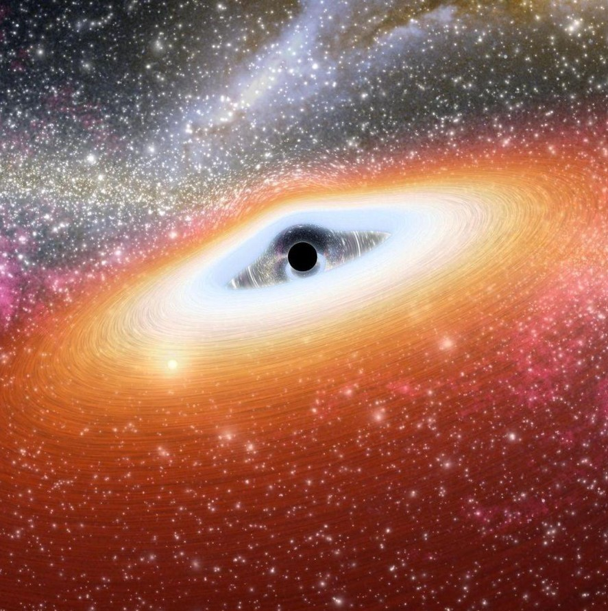

Présentation du concept
Beyond the Stars est un podcast consacré à la cosmologie et aux mystères de l'Univers. Nous explorons le Big Bang, les trous noirs, la matière noire et l'évolution de l'espace.
Découvrez les secrets du cosmos avec nous.
De la naissance de l'Univers à son avenir possible, chaque épisode vous
invite à un voyage fascinant à travers l'espace et le temps.
Nous
parlons également des missions spatiales de
NASA.
Programme de la saison
- Aux origines de l'Univers
- Les mystères des trous noirs
- Quel avenir pour l'Univers ?
Le prochain épisode sortira le .
Voir la foire aux questions
Quel est le sujet de ce podcast ? Beyond the Stars explore la cosmologie, les mystères de l'Univers et les découvertes spatiales.
Écoutez la bande-annonce
Extrait vidéo
Une image de l'Univers
